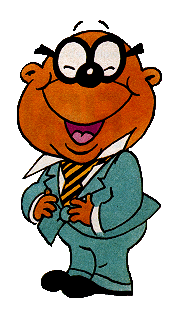

| Life is a tale told by an idiot, full of sound and fury, signifying nothing. | -William Shakespeare |
| All I'm saying is, when I'm around you I find myself showing off, which is the idiot's version of being interesting. | -Harris K. Telemacher |
| You're thinking I'm grown up, but I'm not | -Sara McDowel |
| I went rollerskating once... at the Brooklyn Rollerdrome. It was awful, I was completely out of control. I couldn't stop, I couldn't turn, and... I went slamming into this 8' tall black guy in an emerald green satin jumpsuit and matching skates. And I said, "Oh, I'm terribly sorry, can you help me?" and he looked down at me with deeply stoned eyes, and said, "Little lady, let your mind go, and your body will follow." | -Sara McDowel |
| All I know is, on the day your plane was to leave, if I had the power, I would turn the winds around, I would roll in the fog, I would bring in storms. I would change the polarity of the Earth so compasses couldn't work, so your plane couldn't take off. | -Harris K. Telemacher |
| "Understanding is a three-edged sword" | -Kosh Naranek, first Vorlon Ambassador to Babylon 5 | |
| "The three edges: your side, my side, and the truth in between." | -J. Michael Straczynski, creator of Babylon 5 |
|
If I had words to make a day for you, I'd sing you a morning, golden and true. I would make this day last for all time, Then fill the night deep in moonshine. | -Farmer Hoggett |
|
We were once so close to heaven, Peter came down and gave us medals, Declaring us The nicest of the damned.
|
Don't want to be known as the freak Who just comes around to catch her eye.
|